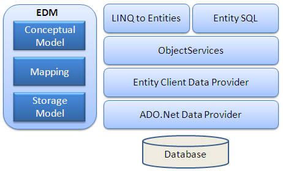
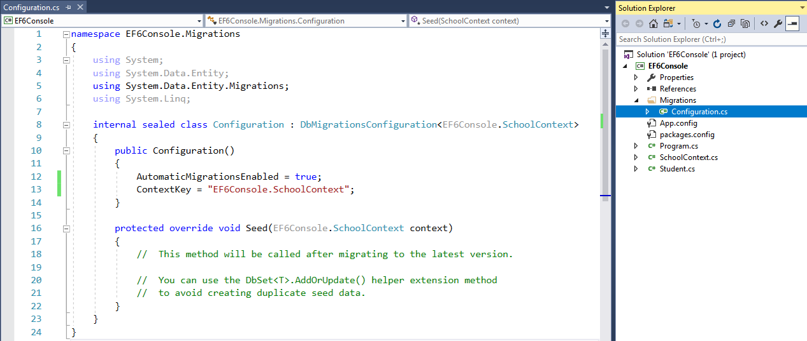
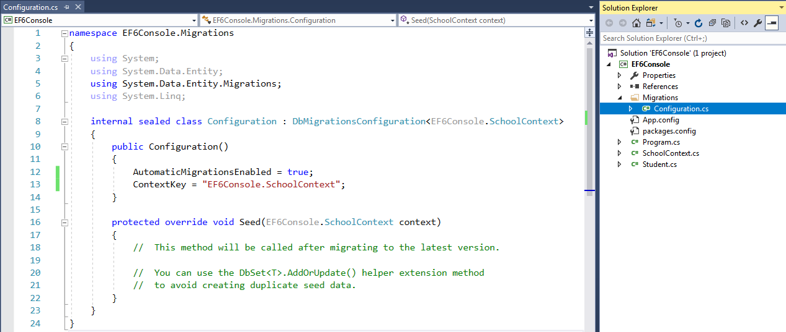
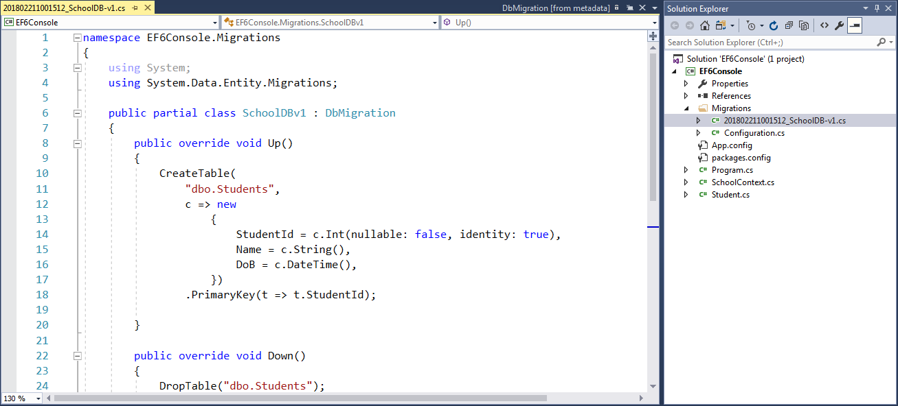

Entity framework
Q1.What is Entity Framework?
Entity Framework is an open-source ORM framework for .NET applications supported by
Microsoft. It enables developers to work with data using objects of domain specific classes without focusing
on the underlying database tables and columns where this data is stored.
Official Definition: “Entity Framework is an object-relational mapper (O/RM) that
enables .NET developers to work with a database using .NET objects. It eliminates the need for most of the
data-access code that developers usually need to write.”
Q2.Entity Framework Features?
Cross-platform:
EF Core is a cross-platform framework which can run on Windows, Linux and Mac.
Modelling:
EF (Entity Framework) creates an EDM (Entity Data Model) based on POCO (Plain Old CLR
Object) entities with get/set properties of different data types. It uses this model when querying or saving
entity data to the underlying database.
Querying:
EF allows us to use LINQ queries (C#/VB.NET) to retrieve data from the underlying
database. The database provider will translate this LINQ queries to the database-specific query language
(e.g. SQL for a relational database). EF also allows us to execute raw SQL queries directly to the database.
Change Tracking:
EF keeps track of changes occurred to instances of your entities (Property values)
which need to be submitted to the database.
Saving:
EF executes INSERT, UPDATE, and DELETE commands to the database based on the changes
occurred to your entities when you call the SaveChanges() method. EF also provides the asynchronous
SaveChangesAsync() method.
Concurrency:
EF uses Optimistic Concurrency by default to protect overwriting changes made by
another user since data was fetched from the database.
Transactions:
EF performs automatic transaction management while querying or saving data. It also
provides options to customize transaction management.
Caching:
EF includes first level of caching out of the box. So, repeated querying will return
data from the cache instead of hitting the database.
Built-in Conventions:
EF follows conventions over the configuration programming pattern, and includes a set
of default rules which automatically configure the EF model.
Configurations:
EF allows us to configure the EF model by using data annotation attributes or Fluent
API to override default conventions.
Migrations:
EF provides a set of migration commands that can be executed on the NuGet Package
Manager Console or the Command Line Interface to create or manage underlying database Schema.
Q3. What is Entity Framework Latest Versions?
Currently, there are two latest versions of Entity Framework: EF 6 and EF Core.
Q4.Explain Entity Framework Architecture?
EDM (Entity Data Model):
EDM consists of three main parts - Conceptual model, Mapping and Storage model.
Conceptual Model:
conceptual model contains the model classes and their relationships. This will be
independent from your database table design.
Storage Model:
The storage model is the database design model which includes tables, views,
stored
procedures,
and their relationships and keys.
Mapping:
Mapping consists of information about how the conceptual model is mapped to the
storage model.
LINQ to Entities:
LINQ-to-Entities (L2E) is a query language used to write queries against the
object model.
It
returns entities, which are defined in the conceptual model. You can use your LINQ skills here.
Entity SQL:
Entity SQL is another query language (For EF 6 only) just like LINQ to Entities.
However, it is
a
little more difficult than L2E and the developer will have to learn it separately.
Object Service:
Object service is a main entry point for accessing data from the database and
returning it
back.
Object service is responsible for materialization, which is the process of converting data returned from
an
entity client data provider (next layer) to an entity object structure.
Entity Client Data Provider:
The main responsibility of this layer is to convert LINQ-to-Entities or Entity
SQL
queries into a SQL query which is understood by the underlying database. It communicates with the
ADO.Net
data
provider which in turn sends or retrieves data from the database.
ADO.Net Data Provider:
This layer communicates with the database using standard ADO.Net.
Q5.What is Context Class in Entity Framework?
The context class is a most important class while working with EF 6 or EF Core. It
represent a session with the underlying database using which you can perform CRUD (Create, Read, Update,
Delete) operations.The context class in Entity Framework is a class which derives from
System.Data.Entity.DbContext. The context class is used to query or save data to the database. It is also
used to configure domain classes, database related mappings, change tracking settings, caching, transaction
etc.
Q6. What is an Entity in Entity Framework?
An entity in Entity Framework is a class that maps to a database table. EF API maps
each entity to a table and each property of an entity to a column in the database.
Q7. Entity properties?
An Entity can include two types of properties: Scalar Properties and Navigation Properties.
Scalar Property
The primitive type properties are called scalar properties. Each scalar property maps
to a column in the database table which stores an actual data.
Navigation Property
The navigation property represents a relationship to another entity.
There are two types of navigation properties: Reference Navigation and Collection Navigation
Reference Navigation Property
If an entity includes a property of another entity type, it is called a Reference
Navigation Property. It points to a single entity and represents multiplicity of one (1) in the entity
relationships.
Collection Navigation Property
If an entity includes a property of generic collection of an entity type, it is
called a collection navigation property. It represents multiplicity of many (*).
Q8. What is POCO Entities (Plain Old CLR Object)?
A POCO entity is a class that doesn't depend on any framework-specific base class. It
is like any other normal .NET CLR class, which is why it is called "Plain Old CLR Objects".
POCO entities are supported in both EF 6 and EF Core.
Q9. EntityState in Entity Framework?
EF API maintains the state of each entity during its lifetime. Each entity has a state
based on the operation performed on it via the context class. The entity state represented by an enum
System.Data.Entity.EntityState in EF 6 and Microsoft.EntityFrameworkCore.EntityState in EF Core with the
following values:
Added
Modified
Deleted
Unchanged
Detached
The Context not only holds the reference to all the entity objects as soon as retrieved from the database,
but also keeps track of entity states and maintains modifications made to the properties of the entity. This
feature is known as Change Tracking.
The change in entity state from the Unchanged to the Modified state is the only state that's automatically
handled by the context. All other changes must be made explicitly using proper methods of DbContext or
DbSet. (You will learn about these methods in EF 6 and EF Core sections.)
EF API builds and executes the INSERT, UPDATE, and DELETE commands based on the state of an entity when the
context.SaveChanges() method is called.
Q10. Development Approaches with Entity Framework?
Database-First Approach
In the database-first development approach, you generate the context and entities for
the existing database using EDM wizard integrated in Visual Studio or executing EF commands.
Code-First Approach
Use this approach when you do not have an existing database for your application. In
the code-first approach, you start writing your entities (domain classes) and context class first and then
create the database from these classes using migration commands.
Developers who follow the Domain-Driven Design (DDD) principles, prefer to begin with coding their domain
classes first and then generate the database required to persist their data.
Model-First Approach
In the model-first approach, you create entities, relationships, and inheritance
hierarchies directly on the visual designer integrated in Visual Studio and then generate entities, the
context class, and the database script from your visual model.
Q11. Persistence in Entity Framework?
There are two scenarios when persisting (saving) an entity to the database using
Entity Framework: the Connected Scenario and the Disconnected Scenario.
Connected Scenario
In the connected scenario, the same instance of the context class (derived from
DbContext) is used in retrieving and saving entities. It keeps track of all entities during its lifetime.
This is useful in windows applications with the local database or the database on the same network.
Pros:
Performs fast.
The context keeps track of all entities and automatically sets an appropriate state as and when changes
occurr to entities.
Cons:
The context stays alive, so the connection with the database stays open.
Utilizes more resources.
Disconnected Scenario
In the disconnected scenario, different instances of the context are used to retrieve
and save entities to the database. An instance of the context is disposed after retrieving data and a new
instance is created to save entities to the database.
The disconnected scenario is complex because an instance of the context doesn't track entities, so you must
set an appropriate state to each entity before saving entities using SaveChanges().
Pros:
Utilizes less resources compared to the connected scenario.
No open connection with the database.
Cons:
Need to set an appropriate state to each entity before saving.
Performs slower than the connected scenario.
Q12. Data Annotations Attributes in EF 6 and EF Core?
Data Annotations attributes are .NET attributes which can be applied on an entity
class or properties to override default conventions in EF 6 and EF Core.These data annotation attributes
work in the same way in EF 6 and EF Core and are valid in both.
| Attribute | Description |
|---|---|
| Key | Can be applied to a property to specify a key property in an entity and make the corresponding column a PrimaryKey column in the database. |
| Timestamp | Can be applied to a property to specify the data type of a corresponding column in the
database as rowversion. |
| ConcurrencyCheck | Can be applied to a property to specify that the corresponding column should be included in the optimistic concurrency check. |
| Required | Can be applied to a property to specify that the corresponding column is a NotNull column in the database. |
| MinLength | Can be applied to a property to specify the minimum string length allowed in the corresponding column in the database. |
| MaxLength | Can be applied to a property to specify the maximum string length allowed in the corresponding column in the database. |
| StringLength | Can be applied to a property to specify the maximum string length allowed in the corresponding column in the database. |
| Table | Can be applied to an entity class to configure the corresponding table name and schema in the database. |
| Column | Can be applied to a property to configure the corresponding column name, order and data type in the database. |
| Index | Can be applied to a property to configure that the corresponding column should have an Index in the database. (EF 6.1 onwards only) |
| ForeignKey | Can be applied to a property to mark it as a foreign key property. |
| NotMapped | Can be applied to a property or entity class which should be excluded from the model and should not generate a corresponding column or table in the database. |
| DatabaseGenerated | Can be applied to a property to configure how the underlying database should generate the value for the corresponding column e.g. identity, computed or none. |
| InverseProperty | Can be applied to a property to specify the inverse of a navigation property that represents the other end of the same relationship. |
| ComplexType | Marks the class as complex type in EF 6. EF Core 2.0 does not support this attribute. |
Q13. Fluent API?
Entity Framework Fluent API is used to configure domain classes to override
conventions. EF Fluent API is based on a Fluent API design pattern (a.k.a Fluent Interface) where the result
is formulated by method chaining.
In Entity Framework 6, the DbModelBuilder class acts as a Fluent API using which we can configure many
different things. It provides more options of configurations than Data Annotation attributes.
To write Fluent API configurations, override the OnModelCreating() method of DbContext in a context class,
as shown below.
public class SchoolContext: DbContext
{
Now, you can add new domain classes and when you run the application again and you will see that the database contains tables for all entities automatically. You don't need to run any command. However, this works only if you add new domain classes or remove classes, but it won't work when you add, modify or remove properties in the domain classes. To do this, remove any property from any domain class and run the application. You will get the following Automatic data loss exception.
This is because you will lose data in the corresponding column of a property. So, to handle this kind of scenario, you have to set AutomaticMigrationDataLossAllowed to true in the Configuration class constructor, along with AutomaticMigrationsEnabled = true;.
{
public SchoolDBContext(): base()
{
}
public DbSet Students { get; set; }
public DbSet Standards { get; set; }
protected override void OnModelCreating(DbModelBuilder modelBuilder)
{
}
{
}
public DbSet
public DbSet
protected override void OnModelCreating(DbModelBuilder modelBuilder)
{
//Write Fluent API configurations here
modelBuilder.Entity().Map(m =>
{
}).Map(m => {
});
modelBuilder.Entity().ToTable("StandardInfo");
}modelBuilder.Entity
{
m.Properties(p => new { p.StudentId,
p.StudentName});
m.ToTable("StudentInfo");
m.ToTable("StudentInfo");
}).Map(m => {
m.Properties(p => new { p.StudentId, p.Height, p.Weight,
p.Photo, p.DateOfBirth});
m.ToTable("StudentInfoDetail");
m.ToTable("StudentInfoDetail");
});
modelBuilder.Entity
Q14. Seed Data in EF 6 Code-First?
You can insert data into your database tables during the database initialization
process. This will be important if you want to provide some test data for your application or some
default master data for your application.
Q15. Migration in EF 6 Code-First?
Entity Framework Code-First had different database initialization strategies like
CreateDatabaseIfNotExists, DropCreateDatabaseIfModelChanges, and DropCreateDatabaseAlways. However,
there are some problems with these strategies, for example if you already have data (other than seed
data) or existing Stored Procedures, triggers etc. in your database. These strategies used to drop the
entire database and recreate it, so you would lose the data and other DB objects.
Entity Framework introduced a migration tool that automatically updates the database schema when your model changes without losing any existing data or other database objects. It uses a new database initializer called MigrateDatabaseToLatestVersion.
There are two kinds of Migration:
1. Automated Migration
2. Code-based Migration
Entity Framework introduced a migration tool that automatically updates the database schema when your model changes without losing any existing data or other database objects. It uses a new database initializer called MigrateDatabaseToLatestVersion.
There are two kinds of Migration:
1. Automated Migration
2. Code-based Migration
Q16. Automated Migration in Entity Framework 6?
Entity Framework introduced automated migration so that you don't have to process
database migration manually for each change you make in your domain classes.
The automated migrations can be implemented by executing the enable-migrations command in the Package
Manager Console.
Example :enable-migrations –EnableAutomaticMigration:$true
Example :enable-migrations –EnableAutomaticMigration:$true
Once the command runs successfully, it creates an internal sealed Configuration class derived from
DbMigrationConfiguration in the Migration folder in your project:

As you can see in the constructor of the Configuration class, AutomaticMigrationsEnabled is set to true. The next step is to set the database initializer in the context class to MigrateDatabaseToLatestVersion, as shown below.

As you can see in the constructor of the Configuration class, AutomaticMigrationsEnabled is set to true. The next step is to set the database initializer in the context class to MigrateDatabaseToLatestVersion, as shown below.
public class SchoolContext: DbContext
{
{
SchoolDBContext(): base("SchoolDB")
{
public DbSet Students { get; set; }
protected override void OnModelCreating(DbModelBuilder modelBuilder)
{
}
{
Database.SetInitializer(new MigrateDatabaseToLatestVersion
());
}public DbSet
protected override void OnModelCreating(DbModelBuilder modelBuilder)
{
base.OnModelCreating(modelBuilder);
}
Now, you can add new domain classes and when you run the application again and you will see that the database contains tables for all entities automatically. You don't need to run any command. However, this works only if you add new domain classes or remove classes, but it won't work when you add, modify or remove properties in the domain classes. To do this, remove any property from any domain class and run the application. You will get the following Automatic data loss exception.
This is because you will lose data in the corresponding column of a property. So, to handle this kind of scenario, you have to set AutomaticMigrationDataLossAllowed to true in the Configuration class constructor, along with AutomaticMigrationsEnabled = true;.
Q17. Code-Based Migration in Entity Framework 6?
The code-based migration provides more control on the migration and allows you to
configure additional things such as setting a default value of a column, configure a computed column etc.
In order to use code-based migration, you need to execute the following commands in the Package Manager Console in Visual Studio:
1. Enable-Migrations: Enables the migration in your project by creating a Configuration class.
2. Add-Migration: Creates a new migration class as per specified name with the Up() and Down() methods.
3. Update-Database: Executes the last migration file created by the Add-Migration command and applies changes to the database schema.
To use code-based migrations, first execute the enable-migrations command in the Package Manager Console. The Enable-Migrations command will create the Configuration class derived from DbMigrationsConfiguration with AutomaticMigrationsEnabled = false.
Now, you need to set the database initializer MigrateDatabaseToLatestVersion in your context class, as shown below.
In order to use code-based migration, you need to execute the following commands in the Package Manager Console in Visual Studio:
1. Enable-Migrations: Enables the migration in your project by creating a Configuration class.
2. Add-Migration: Creates a new migration class as per specified name with the Up() and Down() methods.
3. Update-Database: Executes the last migration file created by the Add-Migration command and applies changes to the database schema.
To use code-based migrations, first execute the enable-migrations command in the Package Manager Console. The Enable-Migrations command will create the Configuration class derived from DbMigrationsConfiguration with AutomaticMigrationsEnabled = false.
Now, you need to set the database initializer MigrateDatabaseToLatestVersion in your context class, as shown below.
public class SchoolContext: DbContext
{
{
public SchoolDBContext(): base("SchoolDB")
{
public DbSet Students { get; set; }
protected override void OnModelCreating(DbModelBuilder modelBuilder)
{
}
}
{
Database.SetInitializer(new MigrateDatabaseToLatestVersion());
}public DbSet
protected override void OnModelCreating(DbModelBuilder modelBuilder)
{
}
Now, you have to create a migration class using the Add-Migration command with the name of your migration class, as shown below.
PM> add-migration SchoolDB-v1

The above command will create a _SchoolDB-v1.cs file with the Up() and
Down() methods, as
shown below.
As you can see, the Up() method contains code for creating database objects and the Down()
method contains code for dropping or deleting database objects. You may also write your own
custom code for additional configurations. This is the advantage over automated migration.
Q18. Linq-to-Entities Query?
The DbSet class is derived from IQuerayable. So, we can use LINQ for querying against
DbSet, which will be converted to an SQL query. EF API executes this SQL query to the underlying database,
gets the flat result set, converts it into appropriate entity objects and returns it as a query result.
Example1using (var ctx = new SchoolDBEntities())
{
{
var student = (from s in ctx.Students
where s.StudentName == "Bill"
select s).FirstOrDefault();
}
Example2
using (var ctx = new SchoolDBEntities())
{
{
var student = ctx.Students
.Where(s => s.StudentName == "Bill")
.FirstOrDefault();
}Q19. Eager Loading in Entity Framework?
Eager loading is the process whereby a query for one type of entity also loads related
entities as part of the query, so that we don't need to execute a separate query for related entities. Eager
loading is achieved using the Include() method.
In the following example, it gets all the students from the database along with its standards using the
Include() method.
Example
using (var ctx = new SchoolDBEntities())
{
{
var stud1 = ctx.Students
.Include("Standard")
.Where(s => s.StudentName == "Bill")
.FirstOrDefault();
}
Q20. Lazy Loading in Entity Framework?
Lazy loading is delaying the loading of related data, until you specifically request for
it. It is the opposite of eager loading. For example, the Student entity contains the StudentAddress entity. In
the lazy loading, the context first loads the Student entity data from the database, then it will load the
StudentAddress entity when we access the StudentAddress property as shown below.
using (var ctx = new SchoolDBEntities())
{
{
//Loading students only
IList studList = ctx.Students.ToList();
Student std = studList[0];
//Loads Student address for particular Student only (seperate SQL query)
StudentAddress add = std.StudentAddress;
}
IList
Student std = studList[0];
//Loads Student address for particular Student only (seperate SQL query)
StudentAddress add = std.StudentAddress;
Rules for lazy loading:
1. context.Configuration.ProxyCreationEnabled should be true.
2. context.Configuration.LazyLoadingEnabled should be true.
3. Navigation property should be defined as public, virtual. Context will NOT do lazy loading if the property is not defined as virtual.
Q21. Explicit Loading in Entity Framework?
Here you will learn how to load related entities in an entity graph explicitly. Explicit
loading is valid in EF 6 and EF Core both.
Even with lazy loading disabled (in EF 6), it is still possible to lazily load related entities, but it must be
done with an explicit call. Use the Load() method to load related entities explicitly. Consider the following
example.
Example
using (var context = new SchoolContext())
{
{
var student = context.Students
.Where(s => s.FirstName == "Bill")
.FirstOrDefault();
context.Entry(student).Reference(s => s.StudentAddress).Load(); // loads
StudentAddress
context.Entry(student).Collection(s => s.StudentCourses).Load(); // loads Courses collection
context.Entry(student).Collection(s => s.StudentCourses).Load(); // loads Courses collection
}
Q22. Execute Raw SQL Queries in Entity Framework 6?
Entity Framework allows you to execute raw SQL queries for the underlying relational
database.
The following methods can be used to execute raw SQL queries to the database using Entity Framework 6.x:
1. DbSet.SqlQuery() - The method to write raw SQL queries which return entity instances. The resulted entities will be tracked by the context
2. DbContext.Database.SqlQuery() - The Database class represents the underlying database and provides various methods to deal with the database. The Database.SqlQuery() method returns a value of any type.
3. DbContext.Database.ExecuteSqlCommand() - The method is useful in executing database commands, such as the Insert, Update and Delete command.
1. DbSet.SqlQuery() - The method to write raw SQL queries which return entity instances. The resulted entities will be tracked by the context
2. DbContext.Database.SqlQuery() - The Database class represents the underlying database and provides various methods to deal with the database. The Database.SqlQuery() method returns a value of any type.
3. DbContext.Database.ExecuteSqlCommand() - The method is useful in executing database commands, such as the Insert, Update and Delete command.
Example
using (var ctx = new SchoolDBEntities())
{
{
// DbSet.SqlQuery()
var studentList = ctx.Students
var studentList = ctx.Students
.SqlQuery("Select * from Students")
.ToList();
//Get student name of string type - DbContext.Database.SqlQuery()
string studentName = ctx.Database.SqlQuery("Select studentname from Student where studentid=1")
.FirstOrDefault();
//DbContext.Database.ExecuteSqlCommand()
int noOfRowDeleted = ctx.Database.ExecuteSqlCommand("delete from student where studentid=1");
string studentName = ctx.Database.SqlQuery
//DbContext.Database.ExecuteSqlCommand()
int noOfRowDeleted = ctx.Database.ExecuteSqlCommand("delete from student where studentid=1");
}
Q23. Repositary and Unit of Work Pattern in EF?
The Repository Pattern, as well as the Unit of Work Pattern, allows to create an abstraction layer between the
data access layer and the business logic layer of an application. The purpose of creating this layer is to
isolate data access layer so that the changes we may operate cannot affect the business logic layer directly.
Implementing these patterns is also helpful for automated unit testing or test-driven development.
The Repository Pattern
The Repository Pattern allows us to create an abstraction layer between the data access layer and the business logic layer of an application. So, this Data Access Pattern offers a more loosely coupled approach to data access. So, we are able to create the data access logic in a separate class, called a Repository, which has the responsibility of persisting the application’s business model.
The Unit of Work Pattern
The Unit of Work Pattern is a pattern that handles the transactions during data manipulation using the Repository Pattern. Unit of Work is referred to as a single transaction that involves multiple operations.
The Repository Pattern
The Repository Pattern allows us to create an abstraction layer between the data access layer and the business logic layer of an application. So, this Data Access Pattern offers a more loosely coupled approach to data access. So, we are able to create the data access logic in a separate class, called a Repository, which has the responsibility of persisting the application’s business model.
The Unit of Work Pattern
The Unit of Work Pattern is a pattern that handles the transactions during data manipulation using the Repository Pattern. Unit of Work is referred to as a single transaction that involves multiple operations.
 IUnitOfWork.cs
IUnitOfWork.cs using System;
namespace ContosoUniversity.DAL
{
public interface IUnitOfWork : IDisposable
{
}{
IStudentRepository { get; }
ICategoryRepository Category { get; }
void Save();
}
ICategoryRepository Category { get; }
void Save();
UnitOfWork.cs
using System;
namespace ContosoUniversity.DAL
{
public class UnitOfWork : IUnitOfWork
{
}{
private readonly ApplicationDbContext _db;
public ICategoryRepository Category { get; private set; }
public IStudentRepository Student { get; private set; }
public UnitOfWork(ApplicationDbContext db)
{
public void Dispose()
{
public void Save()
{
}
public ICategoryRepository Category { get; private set; }
public IStudentRepository Student { get; private set; }
public UnitOfWork(ApplicationDbContext db)
{
_db = db;
Category = new CategoryRepository(_db);
Student = new StudentRepository(_db);
}Category = new CategoryRepository(_db);
Student = new StudentRepository(_db);
public void Dispose()
{
_db.Dispose();
}public void Save()
{
_db.SaveChanges();
}IStudentRepository.cs
using System;
using System.Collections.Generic;
using ContosoUniversity.Models;
namespace ContosoUniversity.DAL
{
public interface IStudentRepository : IDisposable
{
}{
IEnumerable GetStudents();
Student GetStudentByID(int studentId);
void InsertStudent(Student student);
void DeleteStudent(int studentID);
void UpdateStudent(Student student);
}
Student GetStudentByID(int studentId);
void InsertStudent(Student student);
void DeleteStudent(int studentID);
void UpdateStudent(Student student);
StudentRepository.cs
using System;
namespace ContosoUniversity.DAL
{
public class StudentRepository : IStudentRepository
{
}{
private readonly ApplicationDbContext _db;
public StudentRepository(ApplicationDbContext db)
{
public IEnumerable GetStudents()
{
public Student GetStudentByID(int id)
{
//Todo more function implementation
}
public StudentRepository(ApplicationDbContext db)
{
_db = db;
}public IEnumerable
{
return context.Students.ToList();
}public Student GetStudentByID(int id)
{
return context.Students.Find(id);
}//Todo more function implementation
StudentController.cs
using System;
namespace ContosoUniversity.Controller
{
public class StudentController : Controller
{
}{
private readonly IUnitOfWork _unitOfWork;
public StudentController(IUnitOfWork unitOfWork)
{
public IActionResult Upsert(int? id)
{
//Todo more function implementation
}
public StudentController(IUnitOfWork unitOfWork)
{
_unitOfWork = unitOfWork;
}public IActionResult Upsert(int? id)
{
Category category = new Category();
if (id == null)
{
category = _unitOfWork.Student.GetStudentByID(id.GetValueOrDefault());
if (category == null)
{
return View(category);
}if (id == null)
{
return View(category);
}category = _unitOfWork.Student.GetStudentByID(id.GetValueOrDefault());
if (category == null)
{
return NotFound();
}return View(category);
//Todo more function implementation